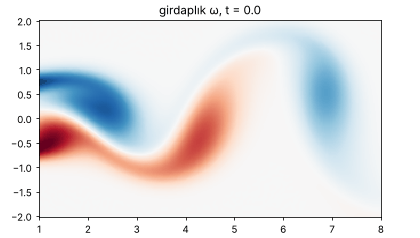
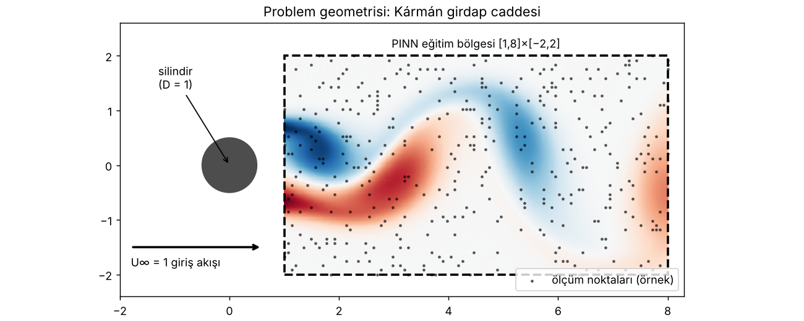
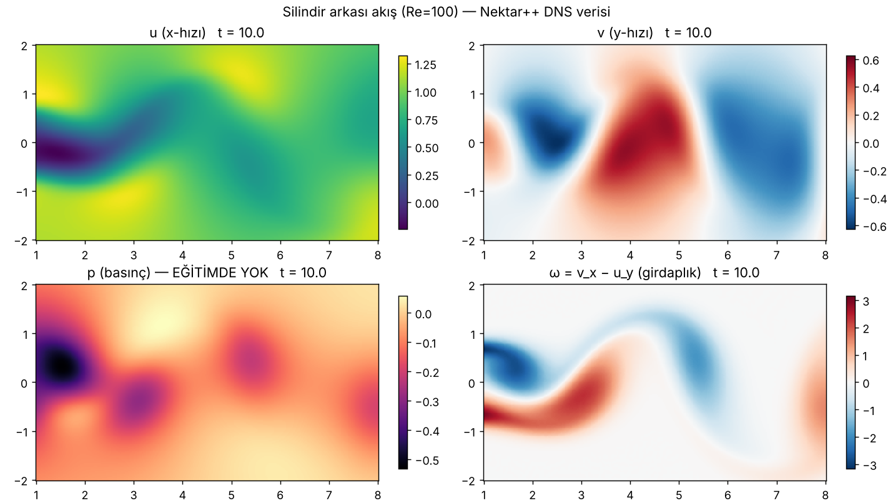
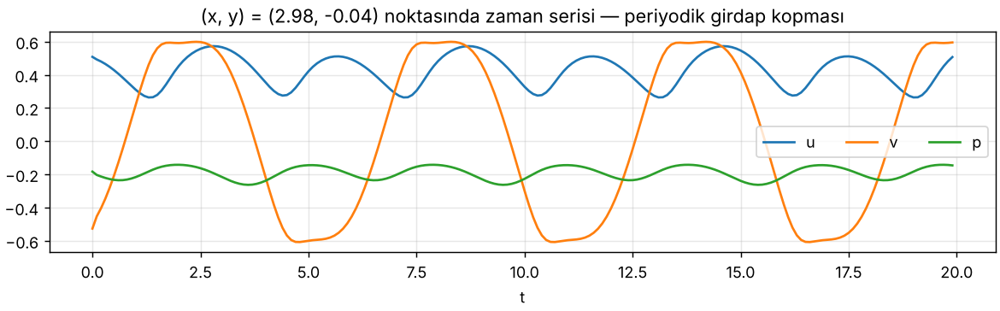
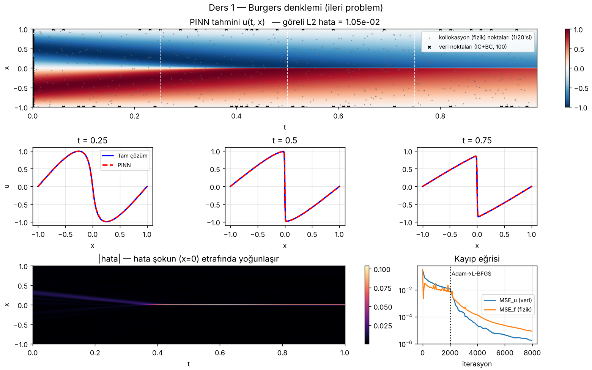
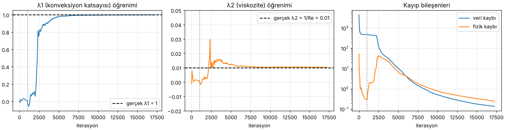
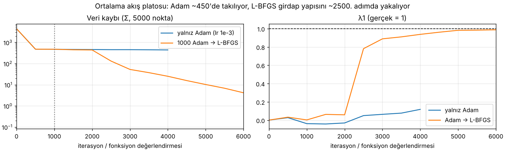
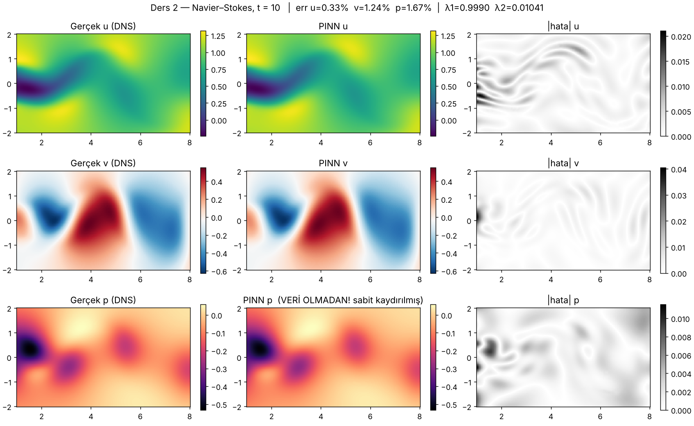

Fizik-bilgili sinir ağlarını (PINN) en çok yıldız alan ve en çok atıf yapılan PINN deposu üzerinden adım adım öğreniyoruz: maziarraissi/PINNs. Kodlar bu bulut oturumunda PyTorch'a taşındı, eğitildi ve aşağıdaki tüm grafikler bu çalıştırmalardan geliyor.

Klasik CFD'de (sonlu hacim, sonlu eleman) alanı ağlara böler, denklemi ayrıklaştırır, büyük bir lineer sistem çözersiniz. PINN'de çözüm doğrudan bir sinir ağıdır: koordinatları alır, alanı verir. (x, y, t) → (u, v, p). Ağ sürekli ve türevlenebilir olduğu için ∂u/∂x, ∂²u/∂y² gibi türevleri otomatik türev (autograd) ile tam olarak hesaplarız. Mesh yok, sonlu fark yok.
Sonra bu türevleri denkleme koyarız. Ağ denklemi tam sağlıyorsa sonuç sıfırdır; sıfır değilse bu kalıntı (residual) bir ceza olur. Eğitim, ölçüm hatası ile kalıntıyı birlikte küçültür.
Denklem ve sınır/başlangıç koşulları biliniyor, alan bilinmiyor. Ders 4: Burgers.
Dağınık ölçümler var, denklemdeki katsayılar bilinmiyor. Ders 5: Navier–Stokes.
Hiç ölçülmeyen bir büyüklüğü (basınç) yalnızca fizikten çıkarmak. Ders 5'in sürprizi.
Orijinal depo, Journal of Computational Physics 2019 makalesinin (Raissi, Perdikaris, Karniadakis) resmi kodudur. Her örnek tek, kendi kendine yeten bir betiktir: veri yükle → ağ kur → kayıp tanımla → eğit → çiz. Dört klasör adı iki eksenden gelir: continuous / discrete time (zamanı ağa girdi olarak mı veriyoruz, yoksa Runge–Kutta adımlarıyla mı ilerliyoruz) ve inference / identification (ileri / ters problem).
tf.placeholder, tf.Session ve tf.contrib.opt.ScipyOptimizerInterface kullanır; bunlar TensorFlow 2'de yoktur ve Python 3.13'te kurulamaz. Matematik ve mimari birebir korundu, satır satır karşılıkları kod yorumlarında yazıyor.D = 1 çaplı bir silindire U∞ = 1 hızla akış çarpıyor, Re = 100. Bu Reynolds sayısında silindirin arkasında girdaplar sırayla bir üstten bir alttan kopar: Kármán girdap caddesi. Veri, Nektar++ spektral/hp çözücüsüyle elde edilmiş yüksek doğruluklu bir DNS. PINN için silindirin arkasındaki [1, 8] × [−2, 2] dikdörtgeni alınmış: 5000 uzay noktası × 200 zaman adımı (Δt = 0.1) = 1 milyon nokta.


.mat içeriği: X_star (5000×2), t (200×1), U_star (5000×2×200), p_star (5000×200). Basınç dosyada var ama eğitimde hiç kullanılmıyor, yalnızca sonunda karşılaştırma için.
Burgers, Navier–Stokes'un tek boyutlu küçük kardeşidir: u·u_x taşınım (konveksiyon), ν·u_xx viskoz difüzyon. Viskozite çok küçük olduğundan t ≈ 0.4'ten sonra x = 0'da neredeyse süreksiz bir şok oluşur. Ağa yalnızca 100 sınır/başlangıç noktası veriyoruz; geri kalan her şeyi 10 000 etiketsiz kollokasyon noktası üzerindeki fizik kaybı öğretiyor.
src/01_burgers_forward.py · kalbi 10 satır
def net_f(x, t): """PDE kalıntısı. Ağ denklemi tam sağlıyorsa f = 0.""" u = net_u(x, t) u_t = grad(u, t) # autograd: ∂u/∂t u_x = grad(u, x) u_xx = grad(u_x, x) # türevin türevi → create_graph=True şart return u_t + u * u_x - nu * u_xx def loss_fn(): mse_u = mean((u_train - net_u(x_u, t_u))**2) # 100 IC/BC noktası mse_f = mean(net_f(x_f, t_f)**2) # 10 000 fizik noktası (etiketsiz) return mse_u + mse_f

Senaryo: elimizde 1 milyon noktanın yalnızca %0.5'i kadar (5000) dağınık hız ölçümü var, PIV deneyi gibi düşünün. Denklemin biçimini biliyoruz ama katsayılarını bilmiyoruz. Basınç hiç ölçülmemiş. PINN'den hem λ1, λ2'yi hem de tüm basınç alanını istiyoruz. Bunu mümkün kılan üç fikir var:
Ağ u, v yerine ψ üretir. u = ψ_y, v = −ψ_x tanımıyla u_x + v_y = ψ_yx − ψ_xy = 0 olur. Süreklilik (kütle korunumu) kayba hiç girmeden tam sağlanır.
λ1, λ2 sıfırdan başlayan iki nn.Parameter. Ağ ağırlıklarıyla aynı optimizasyona girerler. Veriye uyan ve denklemi sağlayan tek tutarlı ikili gerçek değerlerdir.
p'nin kayıpta tek göründüğü yer p_x, p_y. Momentum dengesini kapatmak için ağ p'yi kendisi bulmak zorunda. Yalnız gradyanı belirlendiği için p bir sabite kadar bilinir.
src/02_navier_stokes_inverse.py · net_NS
lambda_1 = nn.Parameter(torch.zeros(1)) # bilinmeyen fizik, 0'dan başlar lambda_2 = nn.Parameter(torch.zeros(1)) def net_NS(x, y, t): psi, p = net(cat([x, y, t], 1)).split(1, dim=1) psi_x, psi_y = grads(psi, x, y) u, v = psi_y, -psi_x # ∇·u = 0 bedava u_x, u_y, u_t = grads(u, x, y, t) v_x, v_y, v_t = grads(v, x, y, t) u_xx, u_yy = grad(u_x, x), grad(u_y, y) v_xx, v_yy = grad(v_x, x), grad(v_y, y) p_x, p_y = grads(p, x, y) f_u = u_t + lambda_1*(u*u_x + v*u_y) + p_x - lambda_2*(u_xx + u_yy) f_v = v_t + lambda_1*(u*v_x + v*v_y) + p_y - lambda_2*(v_xx + v_yy) return u, v, p, f_u, f_v loss = Σ(u_ölç-u)² + Σ(v_ölç-v)² + Σf_u² + Σf_v² # orijinal: reduce_sum
| Büyüklük | Gerçek | PINN | Hata | Makale (200k Adam + L-BFGS) |
|---|---|---|---|---|
| λ1 konveksiyon | 1.000 | 0.9990 | %0.097 | %0.078 |
| λ2 viskozite (1/Re) | 0.01000 | 0.01041 | %4.08 | %4.67 |
| u alanı, t = 10 | göreli L2 | %0.33 | — | |
| v alanı, t = 10 | göreli L2 | %1.24 | — | |
| p alanı (veri yok!) | göreli L2, sabit kaydırma sonrası | %1.67 ham: %1039 | — | |
Bütçe: CPU'da 1 000 Adam + ~16 000 L-BFGS değerlendirmesi, toplam 57 dakika (4 çekirdek). Makale 200 000 Adam + 50 000 L-BFGS adımı kullanıyor; biz CPU bütçesi için kısa Adam ve uzun L-BFGS kullandık ve λ2 için makaleyle aynı düzeyde (hatta biraz daha iyi) bir sonuç aldık.



H = 2(X − lb)/(ub − lb) − 1. NS'de x ∈ [1,8], t ∈ [0,20]; ölçeklemeden tanh doyar ve gradyan kaybolur. İlk satır, en önemli satır.
ReLU'nun ikinci türevi her yerde 0'dır, u_xx hep sıfır çıkar. PINN aktivasyonu en az PDE mertebesi kadar türevlenebilir olmalı.
Türevin türevini almak ve sonra kaybın ağırlıklara göre gradyanını hesaplamak için grafı korur. TF1'de tf.gradients bunu otomatik yapıyordu.
Fizik kaybı etiket istemez, alanın herhangi bir yerine serpiştirilir. Burgers'te 10 000 nokta. Orijinal Latin Hypercube (pyDOE.lhs) kullanır.
Adam kaba bölgeyi bulur, L-BFGS (yarı-Newton) ince ayar yapar. Tam-yığın (full-batch) ve deterministik kayıp gerektirir. Kayıp eğrilerindeki kırılma buradan.
NS kodu reduce_sum, Burgers reduce_mean kullanır. Sum, kaybı 5000 kat büyütür; Adam ölçekten büyük ölçüde etkilenmez ama L-BFGS toleransları etkilenir.
Veri ve fizik terimleri eşit ağırlıklı toplanıyor. Zor problemlerde bir terim diğerini bastırır; modern çözüm: uyarlanabilir ağırlıklar (NTK, GradNorm, SA-PINN).
Hiçbir yerde p'ye referans değer verilmediği için ağ rastgele bir sabit seçer. Değerlendirmede ortalamayı eşitlemek bu yüzden meşru.
pip install torch scipy matplotlib bash data/download_data.sh # silindir verisi (24 MB) python src/00_explore_data.py # figures/00_* python src/01_burgers_forward.py # ~6 dk CPU python src/02_navier_stokes_inverse.py --adam 1000 --lbfgs 15000 # ~1 saat CPU, GPU'da dakikalar python src/02_navier_stokes_inverse.py --noise 0.01 --tag noisy # %1 gürültülü veri python src/03_plot_results.py
torch.tanh yerine torch.relu kullan. Kalıntı neden sıfıra gitmiyor?N_train'i 1000'e indir. λ2 hala bulunuyor mu?(u_x + v_y)² ekle. Hangisi daha iyi?--noise 0.01 ile çalıştır; makalede λ2 hatası %4.67 → %5.70 oluyor.PINN kütüphanesi; geometri, sınır koşulu ve örnekleme hazır. lululxvi/deepxde
Endüstriyel ölçek, 3B CFD, türbülans, çoklu GPU. NVIDIA/physicsnemo
Orijinal yazarın önerdiği modern PyTorch sürümü. rezaakb/pinns-torch